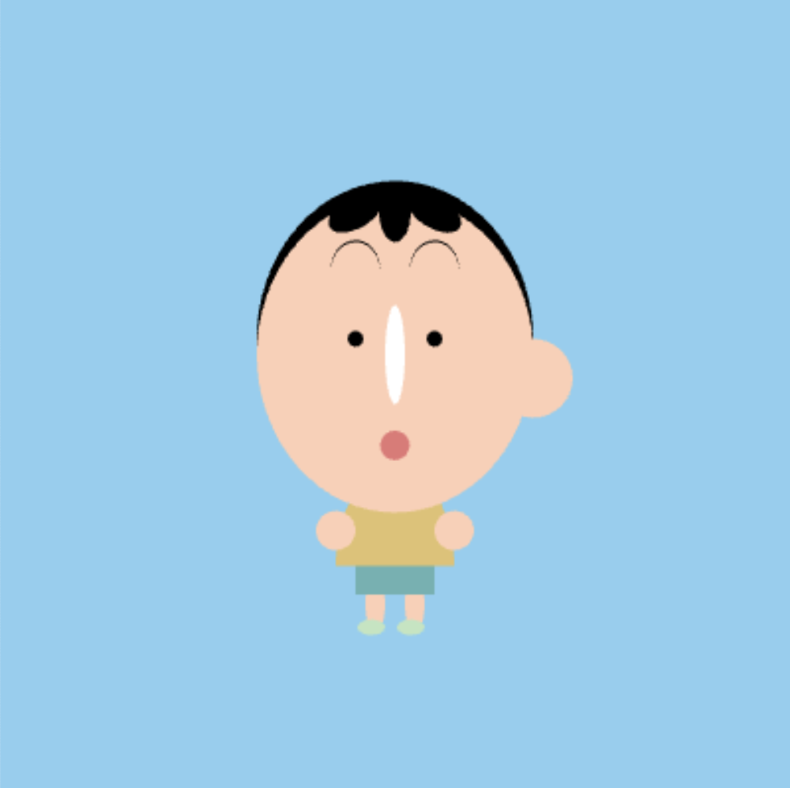

March 25, 2024
For this project, I wanted to create the character 阿呆 from one of my favorite cartoons 蜡笔小新 (Shin Chan). To create the character, I utilized a variety of shapes and colors to match how he looks in the show. After, I crafted some ideas for the character as he is a fairly slow-moving character. As a result, I used relatively small numerical variables to control the speed and range of the movement:
I mainly focused on organizing my code whether it was body (shirt, pants, etc.), arms, face (eyebrows, mouth, eyes), to make the process smoother. By doing so, I could correlate the correct display with the correct update and everything was easier to find in case I needed to make changes.
 P5 Sketch →A benefit of not relying on any code outside of the definition is that by utilizing only two methods, the provided template allowed me to properly organize my code into the physical appearance and dance movement of the character using update and display. Overall, it simplified the process of coding. A challenge of harmonizing my code to others is that in a way, it sets a limit as we have to keep in mind of others rather than having unlimited creative freedom in our project, however, there are ways to creatively move around this. Modularity occurs in several parts of my project whether it's the individual body parts of my code or the actual arrangement of my code. If there was a focus on one specific part of the code or a specific part of the body, each peice would be static, however, by combining it all together, the audience can see the whole piece. Reusability occurs when we each create our character with the same template. The template is reused in a different way by each artist.
Demo Video →